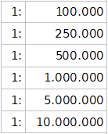

Kartenausschnitt vergrößern/verkleinern
Allgemein
Durch das Betätigen der [+] oder [–] Taste auf der Tastatur. In diesem Fall wird der Karten-Mittelpunkt beibehalten und die Karte dementsprechend vergrößert oder verkleinert.
Durch das Aktivieren der entsprechenden  Buttons in der Symbol-Leiste, in der Menüleiste unter Ansicht > Vergrößern/Verkleinern oder im Kontextmenü der Kartenansicht und anschließendem Klicken mit dem Mauszeiger in die Kartenansicht.
In diesem Fall entspricht der neue Karten-Mittelpunkt dem Punkt, an welchem in die Karte geklickt wurde. Buttons in der Symbol-Leiste, in der Menüleiste unter Ansicht > Vergrößern/Verkleinern oder im Kontextmenü der Kartenansicht und anschließendem Klicken mit dem Mauszeiger in die Kartenansicht.
In diesem Fall entspricht der neue Karten-Mittelpunkt dem Punkt, an welchem in die Karte geklickt wurde.
Außerdem kann nach dem Aktivieren der Vergrößern-Funktion auch ein entsprechendes Auswahl-Rechteck in der Kartenansicht aufgezogen werden, auf welches dann zentriert und vergrößert wird.
Speziell
Innerhalb der Anwendung ist es auch möglich, auf ausgewählte Objekte, Ebenen oder bestimmte Koordinaten zu zentrieren und zu vergrößern. Diese Funktionalitäten finden sich in der Menüleiste unter Ansicht > Vergrößert auf  ausgewähltes Objekt / Ebene / Koordinaten , im Kontextmenü und in der Symbol-Leiste als entsprechende Buttons. ausgewähltes Objekt / Ebene / Koordinaten , im Kontextmenü und in der Symbol-Leiste als entsprechende Buttons.
Durch das Aktivieren der Funktion  auf Kartenausdehnung Verkleinern wird die Karte wieder in ihrer vollen Ausdehnung angezeigt. Diese Funktion kann entweder über das Kontextmenü der Kartenansicht, in der Menüleiste über Ansicht > auf Kartenausdehnung verkleinern oder über den entsprechenden Button in der Symbol-Leiste aufgerufen werden. auf Kartenausdehnung Verkleinern wird die Karte wieder in ihrer vollen Ausdehnung angezeigt. Diese Funktion kann entweder über das Kontextmenü der Kartenansicht, in der Menüleiste über Ansicht > auf Kartenausdehnung verkleinern oder über den entsprechenden Button in der Symbol-Leiste aufgerufen werden.
Da innerhalb der aktuellen Sitzung die jeweiligen Kartenansichten in ihrer Abfolge gespeichert werden, ist es möglich innerhalb dieser Historie zu navigieren. Dies kann über die entsprechenden Buttons in der Symbol-Leiste und der Menüleiste ( Ansicht > Rückgängig/Wiederholen ) geschehen.
|
Kartenausschnitt zentrieren
Neben den bereits genannten indirekten Möglichkeiten der Karten-Zentrierung, ist es ebenso möglich, die Karte ohne Veränderung der Ausschnittsgröße auf eine bestimmten Punkt zu zentrieren, auf welchen in der Karte geklickt wurde.
Diese Funktion findet sich unter Ansicht > Karte zentrieren , im Kontextmenü der Kartenansicht und in der Symbol-Leiste als entsprechender Button .
|
Maßstab Verändern
Grundsätzlich wird bei jeder Veränderung des Kartenausschnittes, der aktuelle Maßstab in der Symbol-Leiste angezeigt.
Zusätzlich zu den aufgeführten Möglichkeiten der Maßstabsveränderung, kann innerhalb der Symbol-Leiste auch aus einer Reihe vordefinierter Maßstäbe ausgewählt werden:

|
 Verschieben und anschließendes Klicken und Ziehen der Karte mit dem Mauszeiger verschoben werden.
Die Verschiebe-Funktion befindet sich im Kontextmenü der Kartenansicht, in der Menüleiste unter Ansicht > Verschieben und in der Symbol-Leiste als Button.
Prinzipiell ist das Verschieben des Kartenausschnittes auch während der Bearbeitung von Objekt-Geometrien möglich.
Verschieben und anschließendes Klicken und Ziehen der Karte mit dem Mauszeiger verschoben werden.
Die Verschiebe-Funktion befindet sich im Kontextmenü der Kartenansicht, in der Menüleiste unter Ansicht > Verschieben und in der Symbol-Leiste als Button.
Prinzipiell ist das Verschieben des Kartenausschnittes auch während der Bearbeitung von Objekt-Geometrien möglich.